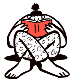

3 Tips Utama Kami
Untuk mendapatkan Beasiswa

Mulai Lebih Awal
Langkah terpenting dalam mendapatkan beasiswa adalah meneliti dan mendaftar sejak dini. Mulailah mencari beasiswa sesegera mungkin dan pastikan untuk membaca kriteria kelayakan dengan cermat.

Tulis Essay Yang Baik
Pastikan untuk menulis esai menarik yang menyoroti kekuatan Anda dan menjelaskan mengapa Anda adalah kandidat terbaik untuk beasiswa tersebut.

Pertahankan Catatan Akademik yang Kuat
Pastikan untuk mempertahankan nilai bagus dan berpartisipasi dalam kegiatan ekstrakurikuler.